Let’s talk about git..#
What is git?#
Open-source project
Distributed Version Control System
can be used completely offline
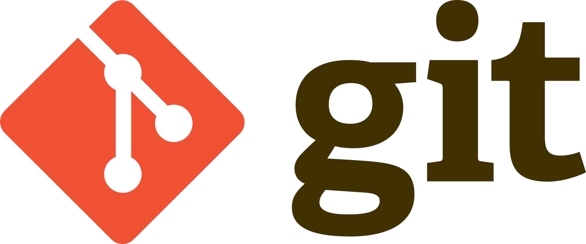
Who of you has done that?#
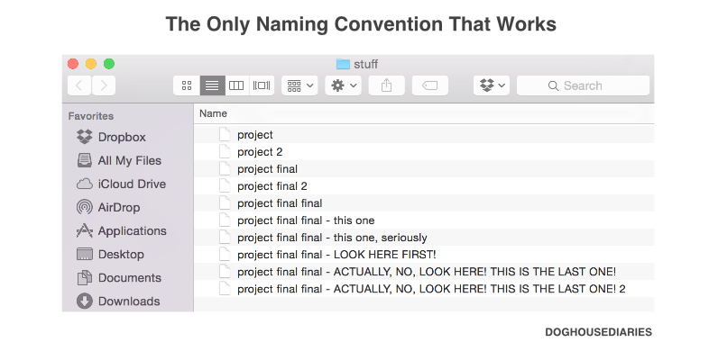
Who of you has used built in version control of a tool already?#
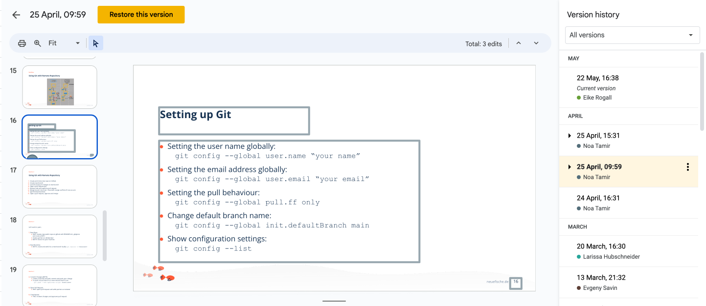
Version Control with git#
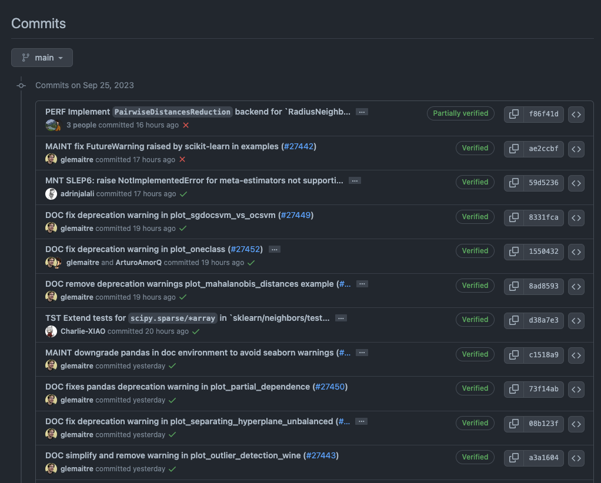
Version Control with git#
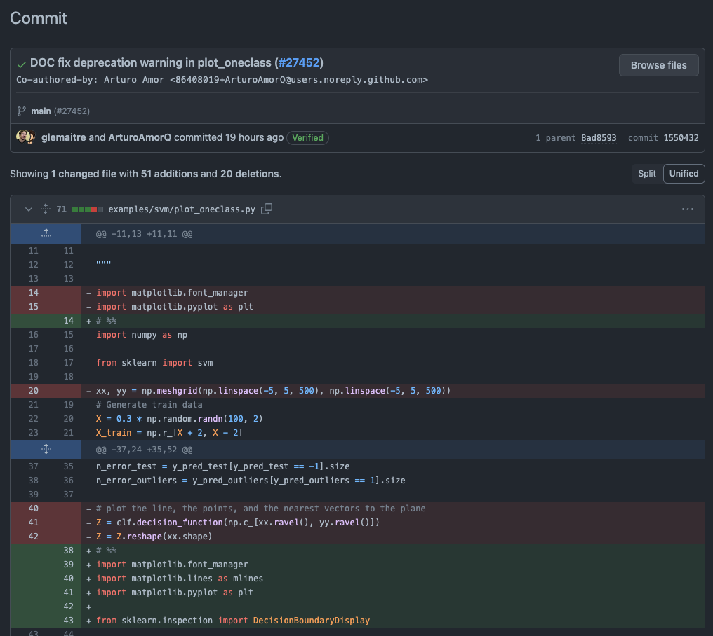
The Three Stages#
modified: file was changed but not committed yet
staged: file was marked in its current version to go into the next commit
committed: file/data is stored in local database (.git directory)
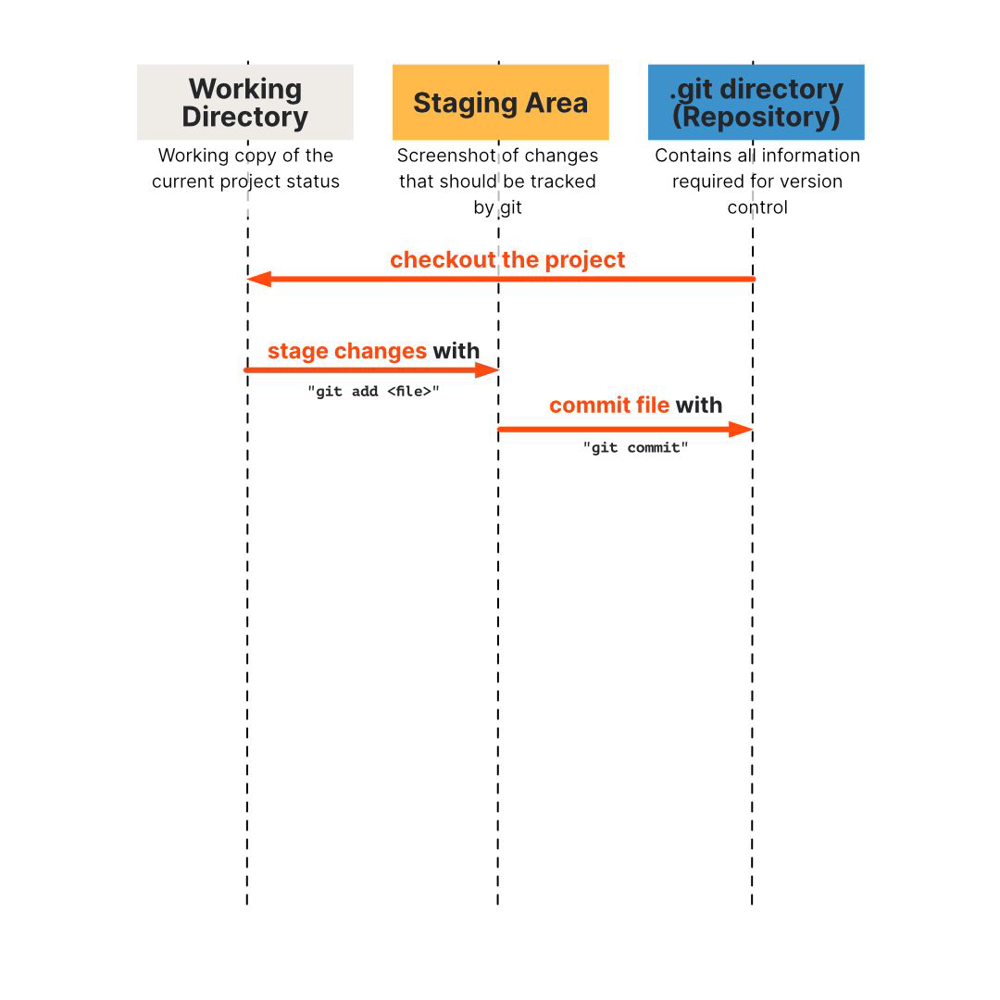
The Workflow#
Modify files in working tree/directory
Selectively stage those changes that should be part of the next commit
Commit the files as they are in the staging area and store that snapshot to your git repository
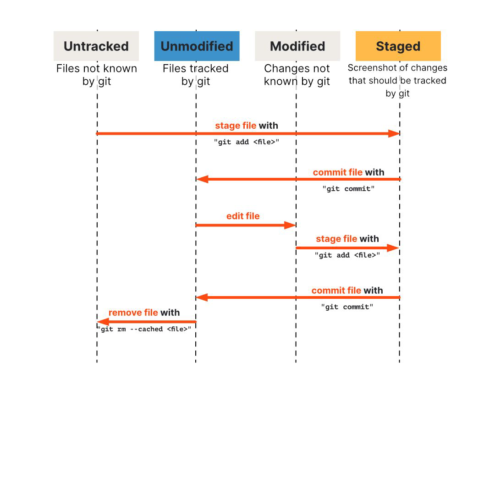
The Status of your Files#
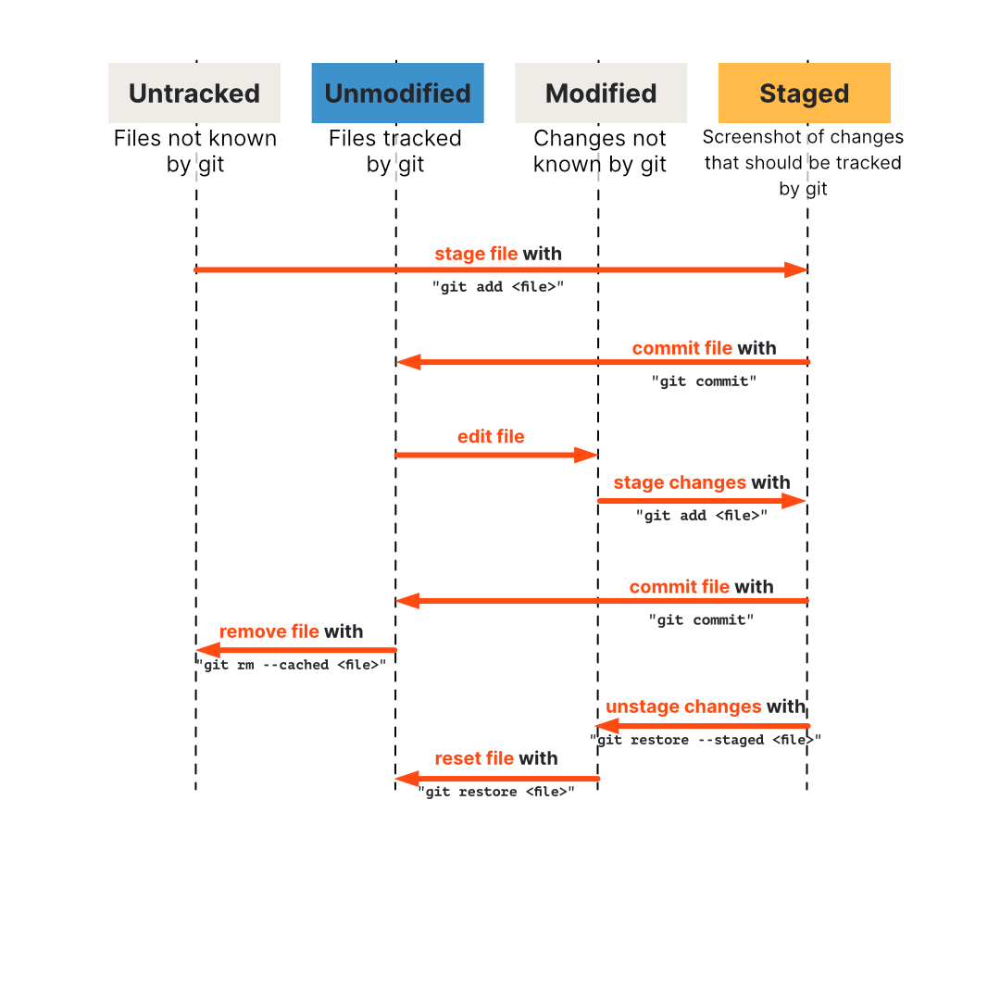
Using Git Locally#
In your terminal: create a new folder and navigate into it
Turn it into a git repository with
git initand create a file (can be any file type)Explore the different stages and commands:
Track a file
Stage and commit a file
Modify a commited file and commit it again
Stage a file and unstage it again
Create a new file, track it and untrack it again
Between every command run
git status. It will not only show you the effects of your command but also suggest all the commands you will need to unstage or untrack a file.
Setting up Git#
Setting the user name globally:
git config --global user.name “your name”Setting the email address globally:
git config --global user.email “your email”Setting the pull behaviour:
git config --global pull.ff onlyChange default branch name:
git config --global init.defaultBranch mainShow configuration settings:
git config --list
What is GitHub?#
Collaborate effectively online based on git (see below)
Open-source community and contribution
Follow others, find and star interesting repositories
Show others what you did, invite to collaborate and collaborate yourself
Demonstrate that you are actively working on projects
Learn from code If you want to learn more about git & GitHub, you can watch this video.
Git Workflows with Larissa#
---------------------------------------------------------------------------
KeyboardInterrupt Traceback (most recent call last)
Cell In[1], line 4
1 from IPython.display import YouTubeVideo
3 video = YouTubeVideo("EVe3UBGEc_s")
----> 4 display(video)
File /opt/hostedtoolcache/Python/3.11.13/x64/lib/python3.11/site-packages/IPython/core/display_functions.py:298, in display(include, exclude, metadata, transient, display_id, raw, clear, *objs, **kwargs)
296 publish_display_data(data=obj, metadata=metadata, **kwargs)
297 else:
--> 298 format_dict, md_dict = format(obj, include=include, exclude=exclude)
299 if not format_dict:
300 # nothing to display (e.g. _ipython_display_ took over)
301 continue
File /opt/hostedtoolcache/Python/3.11.13/x64/lib/python3.11/site-packages/IPython/core/formatters.py:179, in DisplayFormatter.format(self, obj, include, exclude)
177 md = None
178 try:
--> 179 data = formatter(obj)
180 except:
181 # FIXME: log the exception
182 raise
File /opt/hostedtoolcache/Python/3.11.13/x64/lib/python3.11/site-packages/decorator.py:235, in decorate.<locals>.fun(*args, **kw)
233 if not kwsyntax:
234 args, kw = fix(args, kw, sig)
--> 235 return caller(func, *(extras + args), **kw)
File /opt/hostedtoolcache/Python/3.11.13/x64/lib/python3.11/site-packages/IPython/core/formatters.py:223, in catch_format_error(method, self, *args, **kwargs)
221 """show traceback on failed format call"""
222 try:
--> 223 r = method(self, *args, **kwargs)
224 except NotImplementedError:
225 # don't warn on NotImplementedErrors
226 return self._check_return(None, args[0])
File /opt/hostedtoolcache/Python/3.11.13/x64/lib/python3.11/site-packages/IPython/core/formatters.py:344, in BaseFormatter.__call__(self, obj)
342 method = get_real_method(obj, self.print_method)
343 if method is not None:
--> 344 return method()
345 return None
346 else:
File /opt/hostedtoolcache/Python/3.11.13/x64/lib/python3.11/site-packages/IPython/lib/display.py:342, in YouTubeVideo._repr_jpeg_(self)
339 from urllib.request import urlopen
341 try:
--> 342 return urlopen("https://img.youtube.com/vi/{id}/hqdefault.jpg".format(id=self.id)).read()
343 except IOError:
344 return None
File /opt/hostedtoolcache/Python/3.11.13/x64/lib/python3.11/urllib/request.py:216, in urlopen(url, data, timeout, cafile, capath, cadefault, context)
214 else:
215 opener = _opener
--> 216 return opener.open(url, data, timeout)
File /opt/hostedtoolcache/Python/3.11.13/x64/lib/python3.11/urllib/request.py:519, in OpenerDirector.open(self, fullurl, data, timeout)
516 req = meth(req)
518 sys.audit('urllib.Request', req.full_url, req.data, req.headers, req.get_method())
--> 519 response = self._open(req, data)
521 # post-process response
522 meth_name = protocol+"_response"
File /opt/hostedtoolcache/Python/3.11.13/x64/lib/python3.11/urllib/request.py:536, in OpenerDirector._open(self, req, data)
533 return result
535 protocol = req.type
--> 536 result = self._call_chain(self.handle_open, protocol, protocol +
537 '_open', req)
538 if result:
539 return result
File /opt/hostedtoolcache/Python/3.11.13/x64/lib/python3.11/urllib/request.py:496, in OpenerDirector._call_chain(self, chain, kind, meth_name, *args)
494 for handler in handlers:
495 func = getattr(handler, meth_name)
--> 496 result = func(*args)
497 if result is not None:
498 return result
File /opt/hostedtoolcache/Python/3.11.13/x64/lib/python3.11/urllib/request.py:1391, in HTTPSHandler.https_open(self, req)
1390 def https_open(self, req):
-> 1391 return self.do_open(http.client.HTTPSConnection, req,
1392 context=self._context, check_hostname=self._check_hostname)
File /opt/hostedtoolcache/Python/3.11.13/x64/lib/python3.11/urllib/request.py:1348, in AbstractHTTPHandler.do_open(self, http_class, req, **http_conn_args)
1346 try:
1347 try:
-> 1348 h.request(req.get_method(), req.selector, req.data, headers,
1349 encode_chunked=req.has_header('Transfer-encoding'))
1350 except OSError as err: # timeout error
1351 raise URLError(err)
File /opt/hostedtoolcache/Python/3.11.13/x64/lib/python3.11/http/client.py:1303, in HTTPConnection.request(self, method, url, body, headers, encode_chunked)
1300 def request(self, method, url, body=None, headers={}, *,
1301 encode_chunked=False):
1302 """Send a complete request to the server."""
-> 1303 self._send_request(method, url, body, headers, encode_chunked)
File /opt/hostedtoolcache/Python/3.11.13/x64/lib/python3.11/http/client.py:1349, in HTTPConnection._send_request(self, method, url, body, headers, encode_chunked)
1345 if isinstance(body, str):
1346 # RFC 2616 Section 3.7.1 says that text default has a
1347 # default charset of iso-8859-1.
1348 body = _encode(body, 'body')
-> 1349 self.endheaders(body, encode_chunked=encode_chunked)
File /opt/hostedtoolcache/Python/3.11.13/x64/lib/python3.11/http/client.py:1298, in HTTPConnection.endheaders(self, message_body, encode_chunked)
1296 else:
1297 raise CannotSendHeader()
-> 1298 self._send_output(message_body, encode_chunked=encode_chunked)
File /opt/hostedtoolcache/Python/3.11.13/x64/lib/python3.11/http/client.py:1058, in HTTPConnection._send_output(self, message_body, encode_chunked)
1056 msg = b"\r\n".join(self._buffer)
1057 del self._buffer[:]
-> 1058 self.send(msg)
1060 if message_body is not None:
1061
1062 # create a consistent interface to message_body
1063 if hasattr(message_body, 'read'):
1064 # Let file-like take precedence over byte-like. This
1065 # is needed to allow the current position of mmap'ed
1066 # files to be taken into account.
File /opt/hostedtoolcache/Python/3.11.13/x64/lib/python3.11/http/client.py:996, in HTTPConnection.send(self, data)
994 if self.sock is None:
995 if self.auto_open:
--> 996 self.connect()
997 else:
998 raise NotConnected()
File /opt/hostedtoolcache/Python/3.11.13/x64/lib/python3.11/http/client.py:1468, in HTTPSConnection.connect(self)
1465 def connect(self):
1466 "Connect to a host on a given (SSL) port."
-> 1468 super().connect()
1470 if self._tunnel_host:
1471 server_hostname = self._tunnel_host
File /opt/hostedtoolcache/Python/3.11.13/x64/lib/python3.11/http/client.py:962, in HTTPConnection.connect(self)
960 """Connect to the host and port specified in __init__."""
961 sys.audit("http.client.connect", self, self.host, self.port)
--> 962 self.sock = self._create_connection(
963 (self.host,self.port), self.timeout, self.source_address)
964 # Might fail in OSs that don't implement TCP_NODELAY
965 try:
File /opt/hostedtoolcache/Python/3.11.13/x64/lib/python3.11/socket.py:848, in create_connection(address, timeout, source_address, all_errors)
846 if source_address:
847 sock.bind(source_address)
--> 848 sock.connect(sa)
849 # Break explicitly a reference cycle
850 exceptions.clear()
KeyboardInterrupt:
Using Git with Remote Repository#
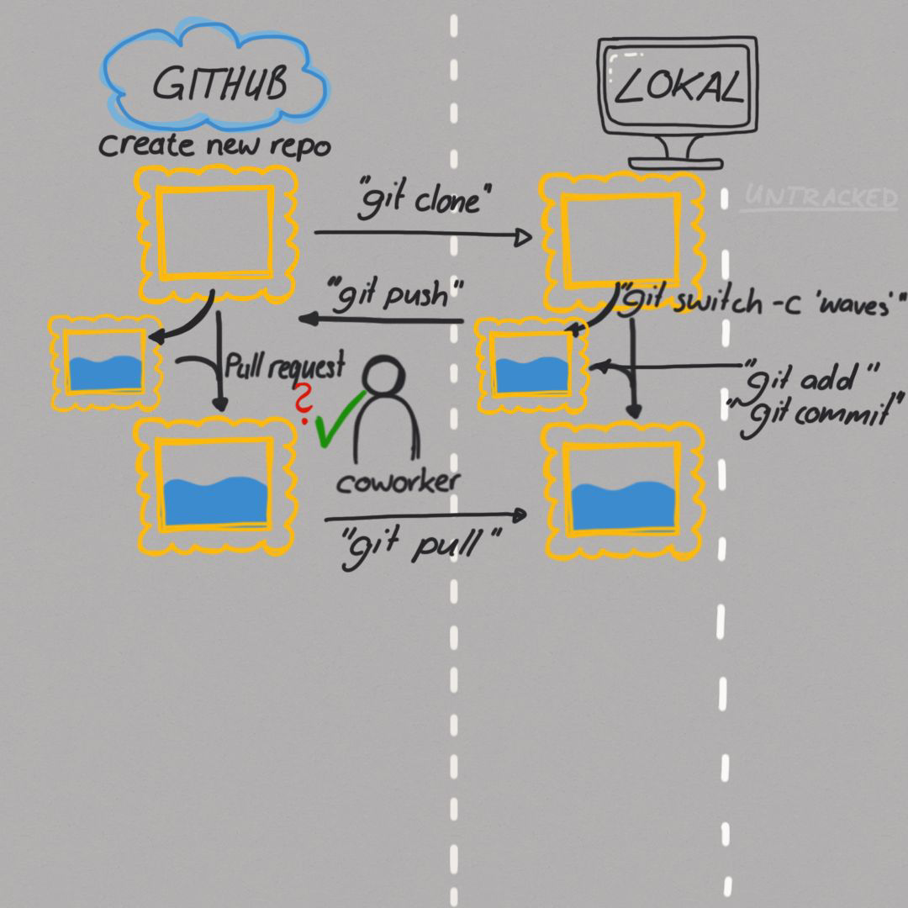
Using Git with Remote Repository#
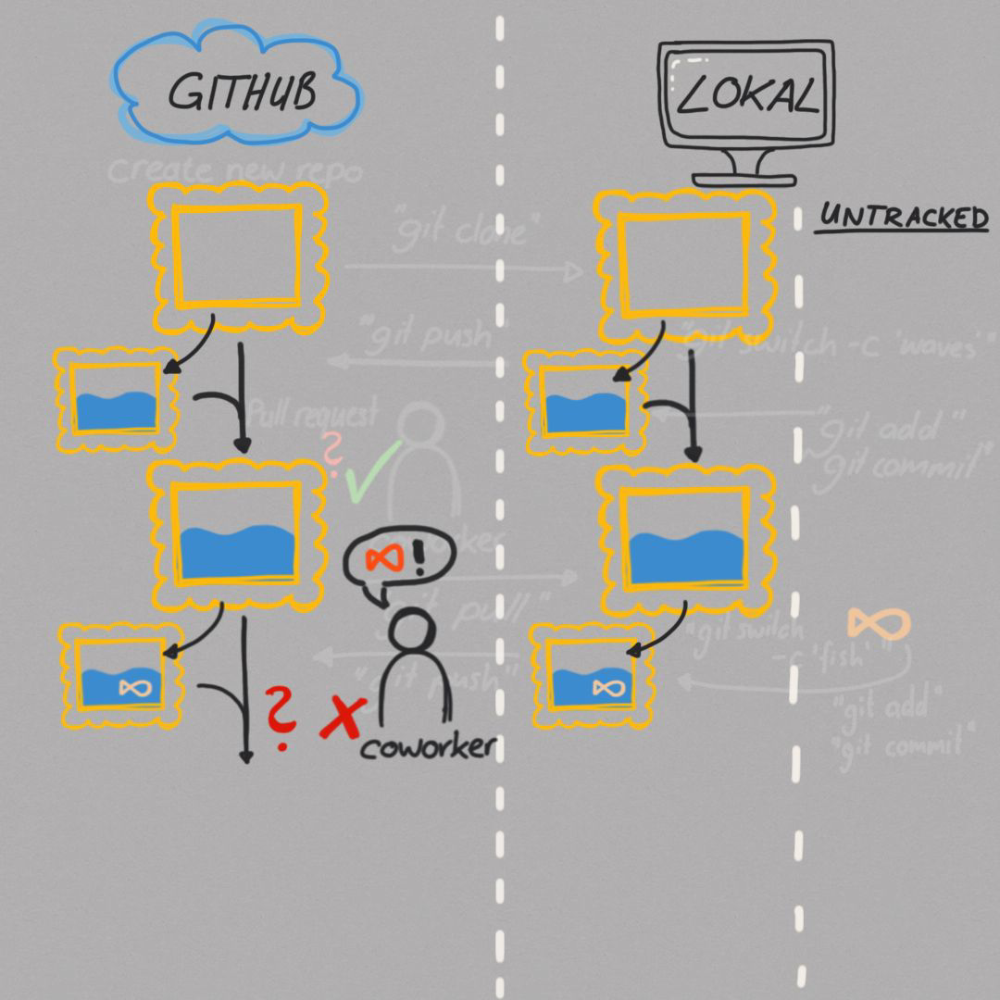
Using Git with Remote Repository#
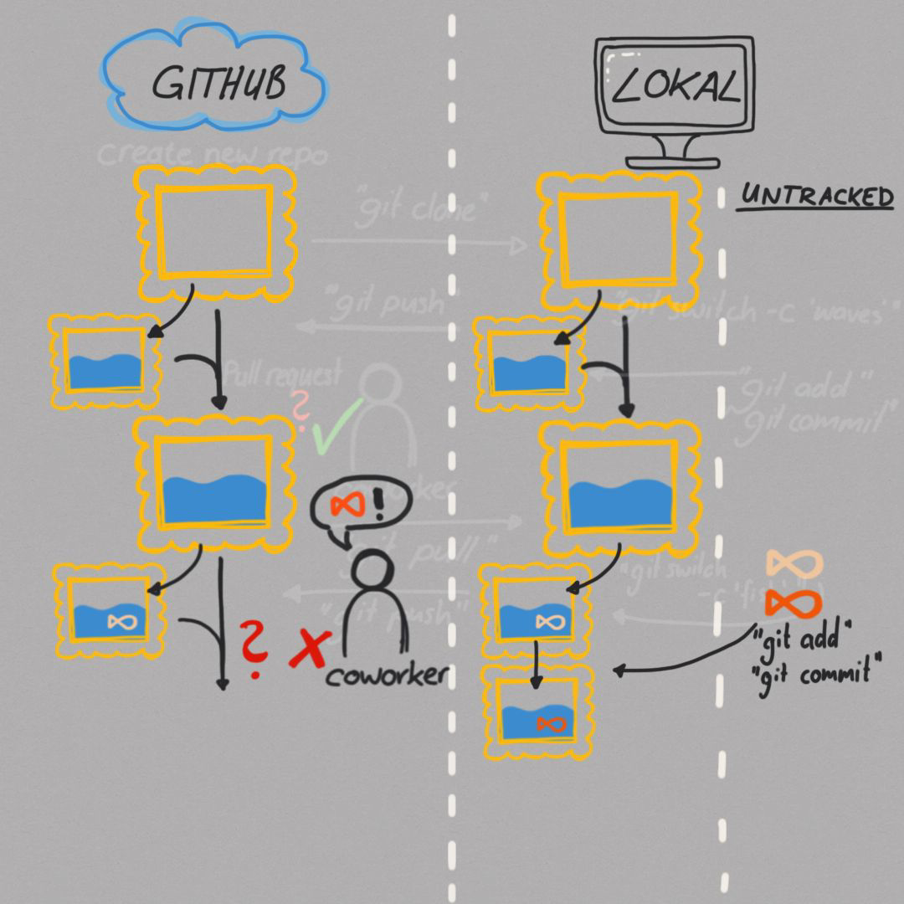
Using Git with Remote Repository#
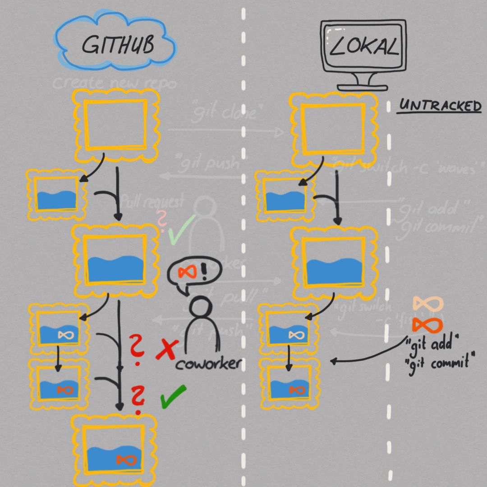
Using Git with Remote Repository#
Create and clone new repo on Github
Create new branch
Commit and push changes to new branch
Open a pull request (pr)
Review code and approve pull request
Merge branch into main / Deal with merge conflicts (if one occurs)
Synchronize branches
Open a pull request, approve and merge
Let’s work in pairs.#
New Repo
ONE: creates new public repo on github with README.md, .gitignore, and Licence (MIT)
Invites partner as collaborator
BOTH: Clone it to your machine
New Branches
BOTH: create and switch to a new branch locally:
git switch -c <new_branch>
Commit Changes (BOTH)
Create a new file and add, commit and push your change
To push a local branch to a new remote branch use:
git push --set-upstream origin <branch_name>
Open Pull Request
ONE: opens pull request and adds partner as reviewer
Code Review
TWO: reviews changes and approves pull request
Merge Branch
ONE: merges approved pull request into main branch and deletes remote branch
Syncing Branches Locally
Now branch of TWO will be behind main branch
switch to main branch:
git switch mainpull changes:
git pullswitch to your branch:
git switch <branch_name>merge new changes from main branch in your branch:
git merge mainadd commit message (vim will open automatically) if necessary and push again
Second pull request
TWO: opens pull request for his branch
ONE: reviews changes and approves pull request
TWO: merges approved pull request into main branch and deletes remote branch
Last but not least..
BOTH: switch to main branch locally and pull changes
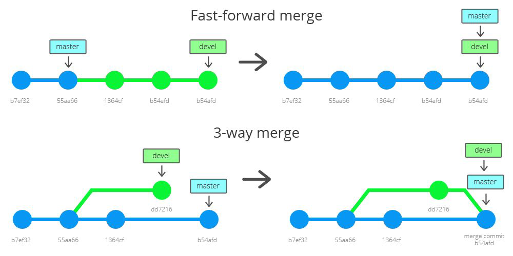
Resources#
Git Basics - https://www.youtube.com/watch?v=_OZVJpLHUaI
Reference Manual - https://www.git-scm.com/docs
Pro Git Book - https://www.git-scm.com/book/en/v2